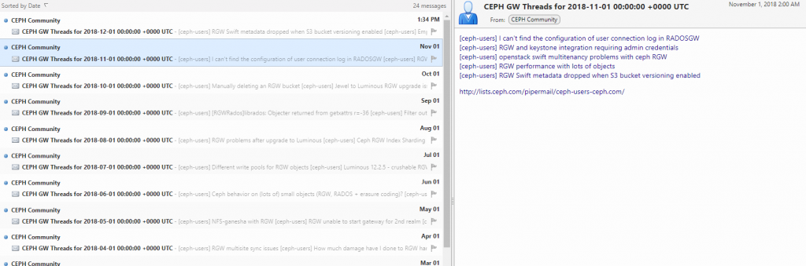

- "it"
Time to try out another programming language!
Golang I see quite frequently in my twitters so have been thinking for a while - why not give it a shot for the next project!
TLDR; https://github.com/martbhell/mailman-summarizer
Took a while to figure out what would be a nice small project. Usually my projects involve some kind of web scraping that helps me somehow, https://wtangy.se/ is one which tells me if there "Was An Nhl Game Yesterday". Also in this case it turned out I wanted something similar, but this time it was work related. I have been tinkering with this for a week or so on and off. Today, the day after Finnish Independence day I thought let's get this going!
For $dayjob I'm in a team that among many other things manage a CEPH rados gateway object storage service. CEPH is quite a big (OK, it's quite an active) project and their mailing lists are a decent (OK, I don't know a better) places to stay up to date. For example the http://lists.ceph.com/pipermail/ceph-users-ceph.com/ has lots of interesting threads. However it sometimes gets 1000 messages per month! This is way too many for me, especially since most of them are not that interesting to me as I'm not an admin of any CEPH clusters, our services only use them :)
So the idea of an aggregator or filter was born. The mailing list has a digest option when subscribing, but it doesn't have a filter.
Enter "mailman-summarizer"! https://github.com/martbhell/mailman-summarizer
As usual when I play around in my spare time I try to document much more than is necessary. But if I ever need to re-read this code in a year or two because something broke then I want to save myself some time. Most likely I won't be writing much more Go between now and then so the things I learnt while writing this piece will probably have been purged from memory!
The end result https://storage.googleapis.com/ceph-rgw-users/feed.xml
as of right now looks like below in one RSS reader:

In summary the steps to get there were:
- Used https://github.com/bcongdon/colly-example to do some web scraping of the mailman/pipermail web archive of the ceph-users e-mail list. Golang here was quite different from Python and beautifulsoup. It uses callbacks. I didn't look too deeply into those but things did not happen in the same order they were written. Maybe it can be used to speed things up a bit, but the slowest part of this scraping is the 1s+random time delay I have between the HTTP GETs to be nice to the Internet ;)
- It loops over the Months (thread.html) for some of the years and only saves links and their titles which has "GW" in the title.
- Put this in a map (golang is different here too. Kind of like a python dictionary but one had to initialize it in advance. Lots of googling involved :)
- Loop over the map and create RSS, JSON, ATOM or HTML output using the gorilla feeds pkg. Use of the time pkg in Golang was needed to have nice fields in the RSS, this was interesting. Not using UNIX 1970 seconds epoch but some date in 2006? Some|most functions?types?interfaces? (I don't know the names of most things) give a value AND an error on the call makes declaring? a variable a bit funny looking:
for l, _ := range data {
keys = append(keys, l)
}
That was the golang part. I could have just taken the output, stored it in a file and put it in a web server somewhere.
https://wtangy.se uses google's object store, but it has an appengine python app in front. So I took a break and watched some NHL from yesterday and in the breaks I thought about what would be a slim way of publishing this feed. I did not want to run a virtual machine or container constantly, the feed is a static HTML and can just be put in an object store somewhere. It would need a place to run the code though, to actually generate the RSS feed!
I'm a big fan of travis-ci and as part of this project the continuous integration does this on every commit:
- spawn a virtual machine with Go configured (this is all part of travis(/any other CI system I've played with), just needs the right words in .travis.yml file in the repo)
- decrypt a file that has the credentials of a service account which has access to a bucket or two in a project in google cloud
- compiles mailman-summarizer
- run a bash script which eventually publishes the RSS feed on a website. It does this to a staging object storage bucket:
- go runs "mailman-summarizer -rss" and writes the output to a file called feed.xml
- uses the credentials to write feed.xml to the bucket and make the object public-readable
- Then the script does the same to the production bucket
One could improve the CI part here a few ways:
- Right now it uses the travis script provider in the deploy phase. There is a 'gcs' provider, but I couldn't find documentation for how to specify the JSON file with the credentials like with appengine. I get a feel that because it's not easy I should probably use appengine instead..
- One could do more validation, perhaps validate the RSS feed before actually uploading it. But I couldn't find a nice program that would validate the feed. There are websites like https://validator.w3.org/feed/ though so I used that manually. Maybe RSS feeds aren't so cool anymore , I use them a lot though.
- An e2e test would also be cool. For example fetch the feed.xml from the staging and make sure it is the same as what was uploaded.